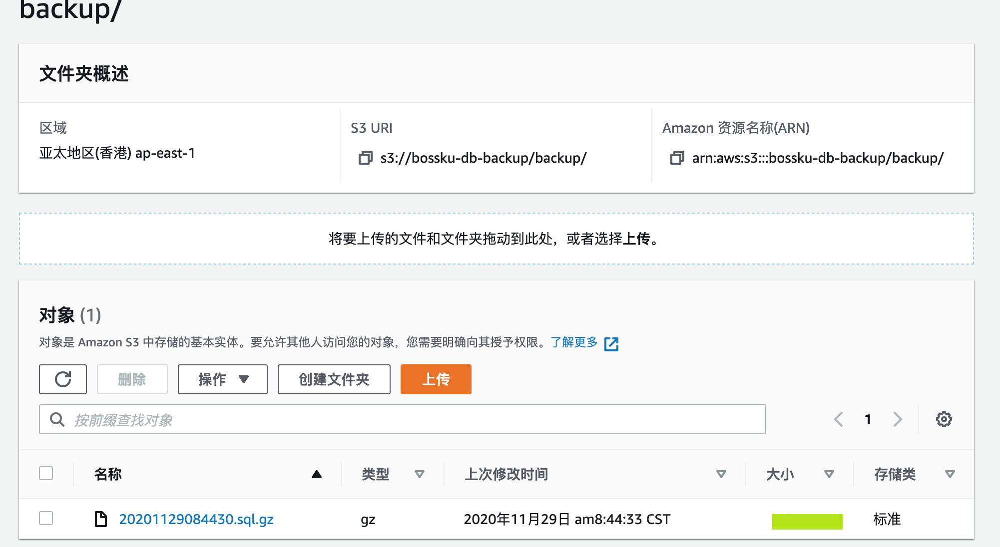

我开发的老板管库虽然没太多收入，但是还是有不少的用户量，为了节约成本，我并没有使用厂商提供的云数据库，而是在服务器本地搭了一个 MariaDB 实例。考虑到用户数据安全还是第一位的，所以我每天会通过定时任务的方式进行全量备份，并上传到我的七牛云，脚本如下：
1
2
3
4
5
6
7
8
9
10
| #!/bin/bash
dir=$(dirname $(readlink -f "$0"))
filename=bossku_$(date +%Y%m%d%H%M).sql
echo ${filename}
cd ${dir}
mysqldump -h{ipaddress} -P{port} -uroot -p{password} bossku > ${filename}
qshell rput bosskudb ${filename} ${filename}
|
上边的命令会生成一个以执行时间为后缀的 .sql 文件并上传到我的七牛云中名为 bosskudb 的bucket中，同时我还会配置这个 bucket 的生命周期，只保留近7天的数据。这实际上是套比较通用的流程，昨天恰好看到一个 repo：https://github.com/appleboy/docker-backup-database 就是用来提供这套流程的封装的，看到作者又是个自己比较崇拜的开发者，于是准备上手用一用。
（P.S. appleboy 大神是个非常活跃的 golang开发者，在去年学习 go 的时候就 fo 了他）
这个工具目前支持备份 PG 和 MySQL 数据库，并上传到 S3（包括支持S3协议的 minio） 或者本地路径下，启用方式也非常方便，写个 docker-compose 文件就可以了。
以下是我的操作记录：
准备环境
首先在我的 AWS 中新建了一个 bucket，我所选择的区域为亚太地区(香港) ap-east-1，bucket 名为 bossku-db-backup。
准备 docker-compose.yml 脚本
1
2
3
4
5
6
7
8
9
10
11
12
13
14
15
16
17
18
19
20
21
22
23
24
25
26
27
28
29
| version: '3'
services:
backup_mysql:
image: appleboy/docker-backup-database:mysql-5.7
logging:
options:
max-size: "100k"
max-file: "3"
environment:
STORAGE_DRIVER: s3
STORAGE_ENDPOINT: s3.amazonaws.com
STORAGE_BUCKET: bossku-db-backup
STORAGE_REGION: ap-east-1
STORAGE_PATH: backup
STORAGE_SSL: "false"
STORAGE_INSECURE_SKIP_VERIFY: "false"
ACCESS_KEY_ID: AKI*******UFT
SECRET_ACCESS_KEY: 4u********************NU
DATABASE_DRIVER: mysql
DATABASE_HOST: {ip}:{port}
DATABASE_USERNAME: root
DATABASE_PASSWORD: {password}
DATABASE_NAME: bossku
DATABASE_OPTS:
TIME_SCHEDULE: "0 0 * * *"
TIME_LOCATION: Asia/Shanghai
|
ACCESS_KEY_ID 和 SECRET_ACCESS_KEY 获取方式可以查看：Where’s My Secret Access Key?。
因为我所启动的数据库实例为 MariaDB:10.2，根据官方介绍，其所对应的 MySQL 版本为 5.7，所以上边命令中的 image 我指定的是 appleboy/docker-backup-database:mysql-5.7。
测试
测试的时候，为了方便查看效果，可以将 TIME_SCHEDULE 删掉，这样会立即执行，且执行一次后退出。
1
2
3
4
5
6
7
8
9
10
| docker-compose up -d
# 然后观察日志
docker-compose logs -f
Attaching to bossku-db-backup_backup_mysql_1_6cc39ab97f2c
backup_mysql_1_6cc39ab97f2c | $ mysqldump --version
backup_mysql_1_6cc39ab97f2c | mysqldump Ver 10.13 Distrib 5.7.32, for Linux (x86_64)
backup_mysql_1_6cc39ab97f2c | $ bash -c mysqldump -h {ip} -P {port} -u root bossku | gzip > dump.sql.gz
bossku-db-backup_backup_mysql_1_6cc39ab97f2c exited with code 0
|
可以看到成功了，再到 S3 中验证一下文件有没有上传上来：

文件也传成功了！
如果在最后的上传步骤遇到无权限的错误，可以通过尝试调整 bucket 权限来解决。
写在最后
通过日志和上传上来的文件名可以看出，其实他也是通过 mysqldump 先生成备份文件，然后通过 S3 的 SDK 进行上传，同时也是使用了日期最为文件名的命名方式。我也大致看了下代码，所使用的 SDK 为 minio 提供的，这样又可以同时支持上传到 minio 了。
创新就是将一些已有的东西进行重新组合，比如这里只是将 docker、mysqldump和S3 进行了组合，就创造出了这么一个好用且通用的工具，非常值得学习。